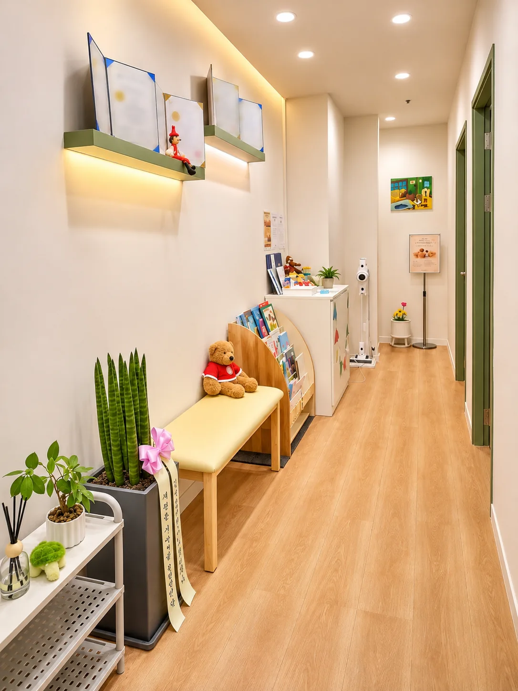

문은정 늘해랑심리상담센터 센터장
상담은 정해진 해답을 드리는 과정이 아니라,
자신의 내면을 이해하고 회복의 힘을 찾아가는 과정이라고 생각합니다.
초기 상담부터 심리검사, 놀이 · 미술 · 모래놀이치료, 부모 상담까지 원장이 직접 진행합니다. 누군가를 바꾸거나 고치기보다, 이미 가지고 있는 힘을 다시 발견하실 수 있도록 곁에서 함께하겠습니다.
- 학력명지대학교 일반대학원 아동가족심리치료 전공 박사수료
- 학력명지대학교 사회교육대학원 표현예술심리치료 전공 석사
- 자격임상심리사 2급 (보건복지부)
- 자격미술심리상담사 1급 · 모래놀이치료사 1급
말로 다 하기 어려운 마음은
놀이와 그림, 모래로도 만납니다
연령과 마음의 상태, 상담 목표에 따라 알맞은 방법을 골라 함께 씁니다.
놀이치료
아이는 말보다 놀이로 마음을 표현합니다. 아이가 이끄는 놀이 안에서 감정을 이해하고 관계를 경험합니다.
미술치료
말로 표현하기 어려운 감정을 그림과 다양한 미술 활동으로 자연스럽게 표현하고, 그 마음을 함께 살펴봅니다.
모래놀이치료
모래와 다양한 소품으로 마음과 경험을 자유롭게 꾸밉니다. 아이도 어른도, 말이 어려운 마음을 안전하게 탐색합니다.
심리검사
TCI 기질 · 성격검사와 해석 상담으로 나와 아이, 부부 서로의 타고난 기질을 이해합니다. 의학적 진단을 위한 검사는 아닙니다.
조용하고 독립된 공간에서
한 사람에게만 집중합니다
모든 상담은 예약제로 진행되어, 다른 분과 마주치는 일 없이 편안하게 머무실 수 있습니다.




상담은 이렇게 진행됩니다
빠른 해결이나 정답을 제시하기보다, 한 분 한 분의 상황과 속도에 맞춰 진행합니다.
상담 예약
네이버 예약이나 문자로 원하시는 요일 · 시간을 알려 주세요. 상담 중에는 통화가 어려워 문자를 남겨 주시면 차례로 연락드립니다.
초기 상담
지금 겪고 있는 어려움과 마음 상태를 함께 이야기하고, 상담이 어떤 방향으로 진행되면 좋을지 정리합니다.
상담 진행
목표와 필요에 맞춰 상담을 이어 갑니다. 아동 · 청소년 상담은 부모 상담을 함께 진행합니다.
상담 종결
목표가 충분히 정리되었다고 느껴질 때, 종결 시점과 이후의 방향을 충분히 상의해 결정합니다.
상담 비용
- 아동 상담 (1회 50분)
- 60,000원
- TCI 기질 · 성격검사 + 해석 상담
- 39,000원
- 성인 · 부부 상담
- 문의
지역화폐 · 제로페이 · 간편결제를 쓰실 수 있습니다. 자세한 비용은 예약 때 안내해 드립니다.
상담비 지원제도
비용 때문에 상담을 망설이지 않으시도록 센터가 직접 지원합니다.
- 수급 · 차상위 · 한부모 · 조손가정30%
- 기준 중위소득 120% 이하 가정20%
정부 · 지자체 바우처가 아닌 센터 자체 제도이며, 간단한 증빙자료 확인 뒤 안내해 드립니다.
상담을 시작하기 전에
읽어 보시면 좋은 글
상계역 5번 출구에서
횡단보도만 건너면 됩니다
- 주소
- 서울 노원구 한글비석로 396벽산종합상가 108동 2층 7호
- 지하철
- 4호선 상계역 5번 출구에서 180m횡단보도 앞 벽산종합상가 2층
- 주차
- 벽산종합상가 지하 주차장 무료벽산아파트 정문 → 108동 쪽 직진 → 왼쪽 지하 주차장
- 상담 시간
- 월 – 금10:00 – 22:00토요일10:00 – 19:00일요일둘째 · 넷째 주 상담모든 상담은 사전 예약으로만 진행합니다.
- 문의
- 010-6793-4899상담 중에는 문자를 남겨 주세요.